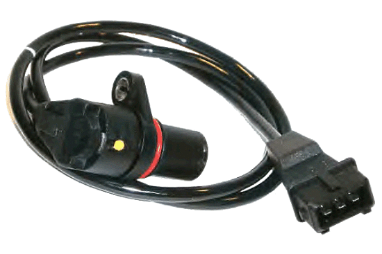
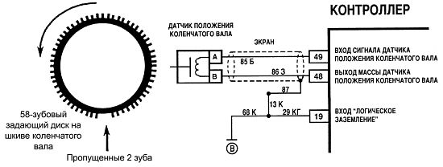

Датчик положения коленчатого вала

Деталь представляет собой стальной сердечник с обмоткой из медной проволоки, размещенный в пластиковом корпусе и залитый компаундной смолой.
Выпускаются 3 типа датчиков синхронизации:
- Индукционные. Принцип работы основан на использовании намагниченного сердечника с намотанной на нем медной проволокой, на концах которой замеряют изменение напряжения. Кроме фиксации положения коленвала, он замеряет скорость его вращения, что также необходимо для качественной работы ДВС. Индукционные датчики являются наиболее распространенными и часто применяющимися в устройстве автомобиля.
- Оптические. В основе их конструкции — светодиод, который излучает световой поток, и приемник, фиксирующий свет с другой стороны. При попадании светового луча на контрольный зуб он прерывается, приемник фиксирует его отсутствие, и информация передается в ЭБУ.
- Датчик Холла. Работает на основе одноименного физического эффекта. На коленчатом валу размещен магнит, при прохождении им датчика в последнем возникает постоянный ток, фиксируемый синхронизирующим диском.
Многофункциональность прибора индукционного типа и датчика Холла делают их наиболее востребованными в конструкции современных моторов.
Принцип работы

Для устойчивого функционирования двигателя рабочий процесс ДПКВ происходит по следующему принципу:
- На коленвале установлено специальное зубчатое колесо (реперный диск) с отсутствующими двумя зубцами — стартовым и нулевым.
- При вращении коленвала зубчики, проходя через магнитное поле ДПКВ, изменяют его — как результат, в приборе формируются импульсы, данные о которых передается в блок управления;
- При прохождении зубчатого колеса с отсутствующими зубцами мимо датчика характер импульсов меняется, и блок определяет начальное положение коленчатого вала;
- на основании подсчета поступивших импульсов компьютер определяет положение коленвала в определенный период времени:
- После обработки информации ЭБУ направляет сигналы в соответствующие системы автомобиля, и производится корректировка их работы.
В результате обеспечивается стабильная работа мотора автомашины.